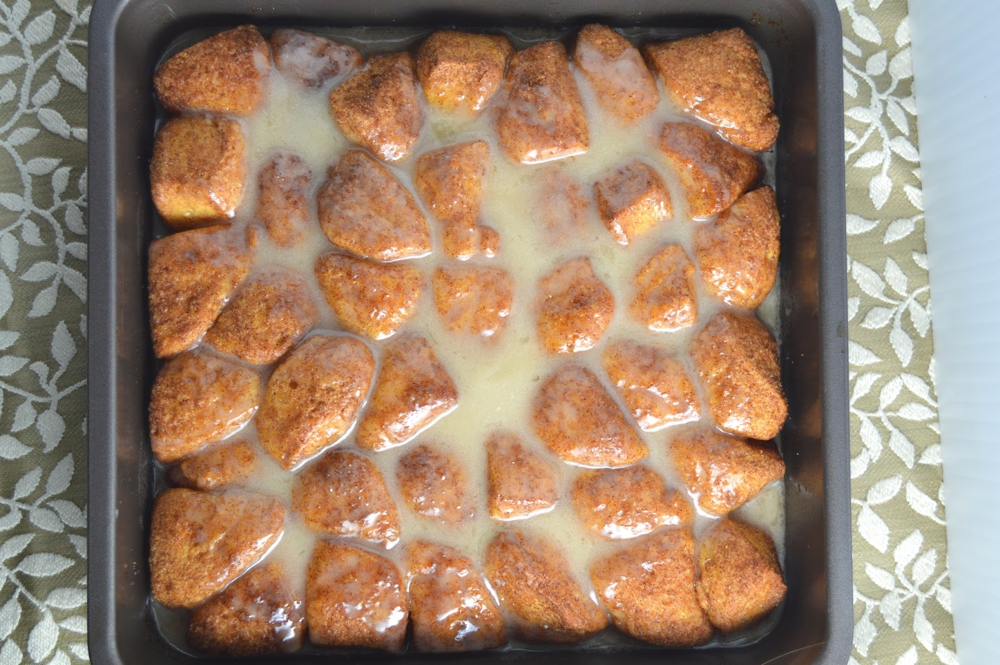

Cinnamelts Recipe

Have you ever wanted those cinnamelts early in the morning but didn't have any gas or will to live? Look no further!
This is a simple at home recipe to make them yourself.
Ingredients
Cinnamon Melts
- 1 (12 oz) canned refrigerator biscuits
- 1 tsp ground cinnamon
- 1/4 cup brown sugar
- 3 Tbsp salted, melted butter
Glaze
- 1 cup powdered sugar
- 2 Tbsp salted, melted butter
- 1 Tbsp vanilla extract
- 2 Tbsp milk of choice
Steps
- Preheat the oven to 350 degrees farenheit. Lightly grease an 8x8 baking dish and set aside.
- Cut each biscuit into 4 pieces.
- In a large bowl, mix together th e cinnamon and brown sugar until fully combined. Add in the biscuits, and toss to coat completely.
- Pour the biscuits into the prepared baking dish. Drizzle the melted butter on top of the biscuits.
- Place in the preheated oven for 20-25 minutes, or until the biscuits are baked through
- For the glaze: beat together the glaze ingredients until smooth.
- Pour the glaze evenly over the slightly cooled biscuits
Return to Main